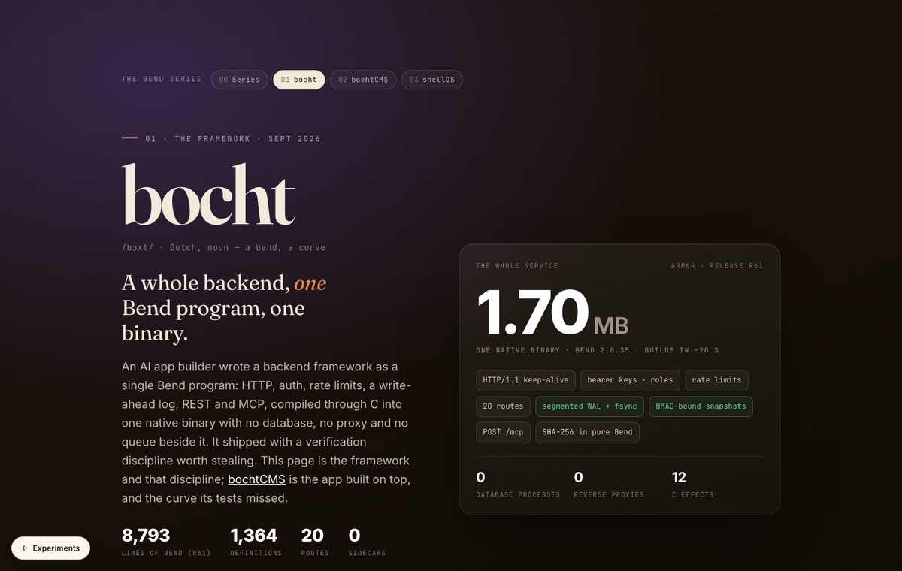

01 · bocht
bocht
A whole backend, one binary.
HTTP with keep-alive, bearer-key auth with roles, per-credential rate limits, a segmented write-ahead log with HMAC-bound snapshots, 20 REST routes and an MCP endpoint, all one Bend program with no sidecars.
Bend 2C via clangWAL + fsyncRESTMCP
8,793lines
1.70 MBbinary
12C effects
